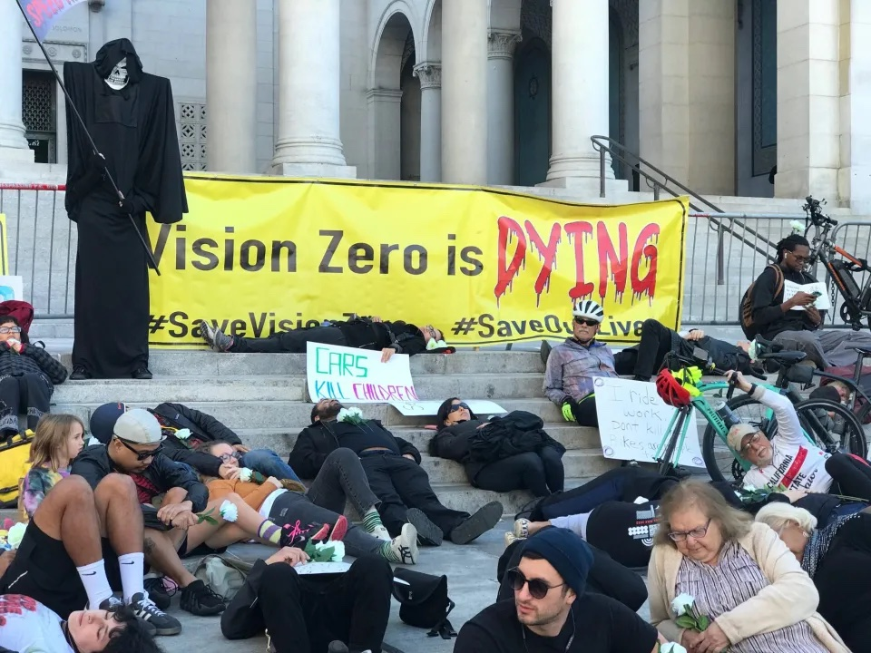

Hate has caused a lot of problems in the world, but has not solved one yet. –Maya Angelou
Captain’s Log, stardate 100712.73. Earth date 02/11/2023, but it took me a while to write the Captain’s Log. To support free and open source software (FOSS), I put my photos on Pixelfed, a FOSS alternative to Instagram that can be self-hosted, though they’re not well-organized there; Captain’s Log is where you find their contexts but you can dig through all my photos on Pixelfed. I wish that there’s a FOSS alternative to Strava. It’s probably not difficult to implement. However, I haven’t completely quit corporate mass surveillance social media because many people and organizations I follow are only on corporate social media. I’ve been pretty satisfied with Mastodon so far. Still new to Pixelfed so can’t comment much yet. Mastodon, Pixelfed, and many other social network apps are part of the Fediverse. Please give Fediverse a shot!

“I probably can’t make it,” I said to myself, as I just snoozed for 20 minutes. Now I’m blessed with flexible work schedule, but if I keep on living this way, then I’ll be doomed once I lose this flexibility after I graduate. I kept on getting up too late, until I need to yank myself out of bed to either conform to an earlier social schedule of events or maximize daylight time for a voyage. Because without Frozen Turkey, I often have trouble stopping what I’m doing, ending up staying up. Willowbrook is kind of far from Pasadena. Taking into account traffic lights and the slow and chaotic part of DTLA, it would realistically take me about 1 and a half hours to ride hard and fast to cover the 21 miles to get to Willowbrook, where this family friendly East Side Rider ride took place. I only had less than 1:15 left. Anyway, if I still feel tired, then I’ll go elsewhere, like re_ grocery first and then Monrovia. Or worst case scenario, they leave without me, and I’ll just continue on my own adventure, to check out some murals and interesting places on Central Ave that I blew past last time in CicLAvia last December. Or perhaps, just like the Tour de North Carson last March, I rode hard but still arrived 2 minutes late, only to find out that they wouldn’t roll until half an hour later, so I had quite a bit of time to kill, talking to other riders.
On the way to Willowbrook
The slow part of DTLA began, slow because of frequent stops, from traffic lights, and because cars and shared scooters not being ridden often block the bike lane. My usual route through DTLA takes the N Spring St bike lane. The part of Spring St by the LA City Hall was closed, for an Iranian protest, presumably against the official celebration of the 44th anniversary of the Iranian “Islamic” Republic. The protest hadn’t started yet. But Boo! Lots of Iranian Imperial flags. Maybe monarchists there. Death to monarchy, and death to all forms of authoritarianism! Anyway, I was running late. No time to take photos or to talk to people. While the road was closed, I could ride on the sidewalk, just more slowly. Meanwhile – not to downplay the atrocities committed by the blasphemous Iranian government – I wonder, on January 21, why couldn’t we close the road when we protested against the death of 312 people from traffic violence in LA City in 2022, which was overshadowed by the Monterey Park shooting that night in the news? Why couldn’t we close the road to protest against climate suicide as the car and fossil fuel industries resist climate action? Even many progressives don’t question car culture.

Initially I planned to take a detour at 52nd street and Avalon Blvd to see the murals at Dr. Maya Angelou Community High School (where the “Hate has caused a lot of problems…” comes from) on the way to Willowbrook, but decided to go there on the way back instead because I was running late and my traffic light luck wasn’t great. There were many murals and walls full of graffiti in this region. Having been fascinated with graffiti since 2008 due to my first trip to LA, I put these graffiti walls in Highland Park in my Hall of Fame, but there were too many here for me to keep track. While it’s nice to have a protected bike lane, it’s annoying when it’s often blocked by cars (now I need to dodge the bollards) and when there’s more trash and potentially flat causing debris in the bike lane. I passed several cyclists, most likely local, riding cheap mountain or commuter bikes, often riding on the sidewalk, a very different culture from that of the rich middle aged men in Lycra (MAMILs). I wonder what those cyclists thought when I passed them. While I don’t really feel like I fit into the MAMIL culture, as if my voyages (especially the urban adventures) is a completely different sport, I certainly did dress the MAMIL way, adjusted for gender and age. It was cold, but I rode hard enough to work up a sweat.
Kill some time before rolling
Finally, left turn at 120th St. I just rode over 120 blocks! Somehow that sounded impressive. Actually more than 120, because there are streets with the same number but different suffices, such as 52nd St and 52nd Pl. Here’s an imperfect explanation for the duplicates. I was at least 15 minutes late. I was right. When I got to Central Ave, I saw a bunch of cyclists at the parking lot at the East Side Riders bike shop and co-op, haven’t departed yet. This is a family friendly ride, not meant for speed craving road warriors. But everyone was welcome. This shop really likes fat-tired lowrider bikes. It also sold skates, which I also see used in CicLAvia. I also saw cruiser style e-bikes, and two Razor mini electric motorcycles without pedals. Nor was I the only roadiot there. There was at least one recent model road bike, and a few vintage ones.


While I enjoy the thrill of speed, I did not come here for speed. Rather, I came to learn about the culture of South LA, in solidarity with this working class neighborhood of color. True, there are more dangerous roads and gangs, but I tend to find poor neighborhoods more vibrant and edgy than rich ones and graffiti is part of it. It’s precisely the edge that I like. A long term goal of the voyages is to learn about the different cultures of each region of LA, as well as different cycling cultures. Travel doesn’t have to be out of town. As an environmentalist, I try my best not to fly. So far the diverse nooks and crannies of LA have been sufficient to keep me mentally stimulated and made me more connected to the land and care more about local politics and history. That’s one of my favorite aspects of LA. I have participated in various types of cycling culture, such as the MAMIL roadie culture and road racing culture at my main club Pasadena Athletic Association (PAA), track racing culture at the Carson velodrome, advocacy culture with Bike LA (formerly LACBC), Pasadena Complete Streets Coalition, CicLAvia, Active SGV and Critical Mass, and bikepacking and touring culture.
I came to this specific ride, of the advocacy culture (and I suppose lowrider culture as well), which I heard about from BikeLA’s newsletter, because I admire the missions of East Side Riders (ESR), which started off handing out food to the less fortunate by bike and has improved bike safety in Watts so “gang members know not to bother folks on bikes”, and People for Mobility Justice, which advocates for active transport in poor neighborhoods of color. I’m fascinated with murals and there are many in South Central (some I visited in this trip); that started with People for Mobility Justice’s Eastside mural ride guide. These murals document community history that may not be told in “official” history written by those in power, and they continue to influence my life, especially the “We are NOT a Minority” mural at Estrada Courts on Olympic from the Chicano Moratorium, which gave me confidence and hope in the rebellious movements behind the thin veneer engineered by those in power to show the tourists.

Most riders I saw were Black or Hispanic, but there were a few Asian and White riders. With my real camera, I could probably pass as the official photographer. I met two other guys with real cameras, at least one was the real official photographer, whose camera had a microphone attached to the hot shoe. He greeted me with a special sense of camaraderie as he saw me taking photos with my real camera.
It turned out that I wasn’t the one who came the furthest. One of the ride marshals drove all the way from Riverside. Maybe not the best for the environment, but he grew up around Willowbrook and Watts and misses the community here, so most likely he would rather live here rather than Riverside if possible. This reminds me of many students who fly across the continent or abroad several times a year to see their families. We need more systemic changes to save our planet, so those who wish to live together can more easily do so, and so plutocratic developers don’t undemocratically displace people from their deeply rooted communities at whim. Of course, a prerequisite is to liberate ourselves from egotistical microfascism and oppressive systems of beliefs, so we don’t end up like White NIMBYs protesting a Black neighbor moving in. LA is losing Black people, from gentrification of Black neighborhoods, pushing them to Antelope Valley and Inland Empire.

Ride 4 love
It was almost 11 am. Finally ready to roll! It was so slow that I shifted to the small chain ring. Again, just like in Critical Mass, sometimes I would ride faster, getting way ahead of the “peloton”, to take photos of them coming, or I may stop by the side to take photos from behind and later catch up. We took up an entire lane, with the confidence and courage from safety in numbers, mostly riding outside the bike lane, where it’s only practical to ride single file. At intersections, the ride marshals in high vis vests would hold up traffic when the light turned red, so we could remain in one bloc. At one point (forgot exactly where) holding up traffic made the drivers quite furious, with horns blaring, but most of the time nobody complained and the traffic wasn’t heavy anyway.


Not having the route, I didn’t know the length of the ride, but I overheard someone saying about 12 miles. Riding 12 miles at this pace is no problem for me without refreshment, but we stopped a few times for refreshment and group photos, to cater to all fitness levels. I think that’s nice, because back in January 2021, I was so out of shape after years of unhealthy lifestyle that left me underweight that biking 2 miles or up a 2% hill could feel challenging. Each rest stop was quite long, which I spent in part talking to other riders.


These are some riders I talked to: Jenny from West Hollywood, and Maru from southeast LA. Jenny is an art student who often rides with various groups in the edgy fixie culture. She likes fixies and single speed bikes because of their simplicity and the challenge to climb on too hard a gear. Also, these bikes tend to be cheap and less attractive to thieves. She biked up Griffith Park and Elysian Park hills on a single speed bike and knows a group that does the Griffith Park ride at 6:30 am on fixies. I have met a fixie group at the scenic turnout in Griffith Park at dusk, probably a different group. Impressive, as I used my small chain ring for the climb. At the Tour de North Carson ride, I also met some fixie riders, one wearing an aero time trial helmet and fascinated with track racing while also riding a fixie with high gear ratio on the road.
We agree that South Central isn’t very safe to ride in, despite the Avalon bike lane, because of aggressive drivers, probably aggressive because the road designed for speed invites the aggression. Poor neighborhoods of color are often turned into highways, leading to more dangerous roads and worse pollution. Here we have the wide and fast roads, Avalon, Central, Florence, El Segundo, Firestone, Century Blvd, Imperial Hwy, and etc. crisscrossing the neighborhoods. In Santa Monica, Pasadena, and Boyle Heights, freeways have destroyed neighborhoods of color, while White neighborhoods were more likely to fight off planned freeways. How many highways are there in San Marino? Huntington Dr and Sierra Madre Blvd, and the part in San Marino isn’t that bad, with a lot of greenery. No freeways. I should do a more formal analysis of length of freeways and multi lane highways with high speed limit in different regions of LA and how that relates to redlining.
We also both like Highland Park, for her a climb, for me mostly bombing down the hills but I have to climb on the way back. While I learnt to ride a fixie at the Carson velodrome, I would only ride one in the velodrome as I can’t be sure to stop promptly at each intersection. What I learnt from the fixie is the track racing culture, which is very different from the urban fixie culture, such as that the track racers I met were overwhelmingly White while urban fixie riders I met tend to be more diverse, and that the urban fixie riders tend to show more of a rebellious vibe than track racers. However, from that Carson rider, there may be some overlap. I’m not sure if the Bahati Foundation that grew out of Compton is relevant to the intersection. On city streets, I have also witnessed the BMX culture, but I have never participated in it so I don’t know anything about it. See, I really think it would take years of research and a PhD thesis to write a book to comprehensively document all those different bike cultures in different regions of LA.
Maru introduced me to the Pave Commute app which in theory has employers or sponsoring companies pay us for bike commutes. I signed up with the CiBiC LA group. I used the app a few times this week and got quite some “coins”, but I don’t yet know what I can use those coins for. It’s supposed to match people with similar routes to form group to commute together. I haven’t gotten a group yet, probably because I don’t go to my office on a fixed schedule and the app caters more to regions adjacent to DTLA and Lincoln Heights though it allowed me to join from Pasadena. We exchanged phone numbers, if we wish to ride together or if we want to go to CicLAvia and Critical Mass.
Watts isn‚Äôt what I thought it is. We rode through a brand new seemingly posh and mostly uninhabited neighborhood around Century Blvd west of Alameda and we stopped at the Starbucks there, where I got some water. However, soon after, we saw much less posh Estrada Courts style apartment complexes. This is the Jordan Downs redevelopment and the shopping plaza with this Starbucks and Nike is also part of the redevelopment. The uninhabited buildings were probably not completed yet. Just like Estrada Courts, Jordan Downs is a public housing project initially built to house World War II workers. The new buildings are the redeveloped region, with a mix of market rate and affordable units, though the website doesn‚Äôt say exactly how many units are affordable. As of writing, the website says the rent of a one bedroom apartment is $673 and that of a two bedroom apartment is $1330, which does sound like an affordable rate, by Pasadena and Westside standards. Bummer: no pets üòø. The Estrada Courts style buildings are the old Jordan Downs. Burning question, does the redevelopment cause gentrification? Whichever case, even if it‚Äôs meant for gentrification, I see how it‚Äôs absorbing the surrounding culture, such as the mural at Starbucks, a style I don‚Äôt see in shopping centers targeting richer people in Pasadena, Glendale, Century City, and Beverly Hills.


Next stop was Watts Towers, which I have visited twice before, first after the Tour de North Carson, and then in CicLAvia last December.


The sun was behind the towers when seen from the plaza, making some photos facing the sun challenging. But it can be a feature rather than a bug when I realized that the shadows cast by the towers are a feature.

Also because of the direction of the sun, I got a better look up close at the other side of Watts Towers.

Then we rode down Willowbrook Ave, next to the railroad, before the last rest stop at the Willowbrooks/Rosa Parks transit center. The ride leader said we were behind schedule and would make a shortcut to go back to the bike shop. I don’t know what the original plan was. Here Jenny took off, heading back to West Hollywood.

Oh, I forgot to mention. We had a DJ, though I didn’t hear the music much because the peloton was so spread out. Here I caught the DJ bike in action:


Back at the bike shop. What did I learn? Well, that sounds too much like a school field trip and I’m too old for that. I did experience this community and culture and had fun. It’s only once, so not in depth. The ESR holds a ride every month, and I may come back. Let the experience ferment and influence me in subtle and subconscious ways, and let this thread of experience be woven into my tapestry of worldview. Oh, actually I can put some of what I learn to words: Thank you, ESR, for making Watts more awesome! I know that Watts has a bad reputation as one of the most dangerous neighborhoods in LA. It’s not my first time here though I always preferred to visit in a group for safety reasons (like I rode with the Carson fixie riders to Watts back in March and CicLAvia already has a group pretext), but this event further showed that Watts has a cool and vibrant culture and made me want to learn more about it. My visits humanized this much avoided neighborhood.
I was hungry and asked the locals to recommend a restaurant. They recommended Mariscos Las Palmas on 120th St, which they go all the time. It specializes in seafood, but I saw some vegetarian options on their menu so I went. I ordered a veggie burrito, but when I started eating, I realized that I got fish, due to a misunderstanding. Anyway, I went vegetarian to reduce my carbon footprint and I don’t claim that God absolutely forbids eating meat, so I didn’t complain, especially that the fish burrito was really good.


Solo adventure of South Central
Then I began to head back north on Central Ave, to check out some cool places I blew past last December in CicLAvia. While Central isn’t bike friendly, and true, it didn’t feel good to ride on, it didn’t feel too bad either. OK, it’s bad. Just look at how little space I had in the photo below.

I stopped by Chuco’s Justice Center at 76th St whose murals I greatly admire, one of which says “Fight for your freedom”. This is an aspect of the vibrancy of poor neighborhoods of color that I like, which I greatly relate to. I also love the rebellious wild type graffiti font, which I find more elegant than aristocratic curly letters, as the former signals solidarity from below while the latter signals snobbery. I used to take regular walks in the rich suburban city San Marino right south of the Caltech campus (even Lincoln Heights feels more like a city; this is probably why “LA” usually does not strictly refer to LA City and I’ll elaborate in another blog post). True, it’s pretty, but nothing is going on, no graffiti, backyard parties, music blaring audible from the street, yard sales, people working on bikes and cars, or kids giving out lemonade that I saw in poorer regions. Also, the security tech signs signaling invisible fences and some actual super elaborate fences guarding obscenely huge mansions made me feel unwelcome.


Along the way, I saw some more murals on Central.

Then I made a detour west on 54th St to see the murals at Dr. Maya Angelou Community High School and another mural that I saw on the Mural Conservancy. Thank you, Mural Conservancy of LA (MCLA), for your great work! I looked at the MCLA website to find murals enroute, and this is one of them, the Wesley United Methodist Church mural at 52nd St and Main, Beacon of Hope. Unfortunately, when I got there, the lower half of the mural was whitewashed, probably because of graffiti. The full mural can be seen on the MCLA website; that’s a precious photo now as the mural is partially lost. Which is why I really should stop to take photos of murals that I like wherever I go, of course when it’s safe to stop, because of the precarious situation murals are in, so if I don’t take a photo now it might no longer be there in my next trip to this region.
I just finished reading the Murales Rebeldes book, about Chicano murals in LA and Orange Counties, often with rebellious contents, being censored and erased. Most murals featured in the book are no longer extant. Now this mural joined the rank. According to the book, Chicano murals subvert the commodified notion of indivual authorship of art as the murals are often collectively painted by students and community members. Murals document history of local communities of color that may not be otherwise written, and boldly claims public space, not to glorify the powerful as often done by public art, but to inspire rebellion.

There’s a mural around 53rd St and Main:

Then I wonder, is it common for kids here to drop out of school? According to Mapping LA, only 3.4% of people in this neighborhood has a four year college degree, low in the county, and the largest group has less than high school education, high in the county. Is it because of the younger population here or higher rates of dropping out or both? Maybe both, because the data does show younger age, and this mural suggests that dropping out is a problem. If this is true, then the message of the Maya Angelou High School mural really brings me hope. I grew up in schools with messaging of patriotism and obedience, not universal love and justice. I wish that I get these murals in my high school.
Having been in school for so long – mostly private school – and still in school now, I have never thought about anywhere where dropping out is common. Then this is one of the strange new worlds with respect to myself, and I don’t have to travel far to get there. Ah, I often don’t look backwards. There’s another mural at this intersection that I found on February 18, so I won’t include that here.
Then I headed to the Maya Angelou high school. There are actually numerous murals, but I focused on the most prominent one. Here’s a statement by the artist and a much better photo of the mural than mine. I arrived too late for the right sun angle so the mural was in the shade, but I just documented my trip as is. Nor did I have access to a higher viewpoint. From the photo on the artist statement, there used to be murals on the side of the building as well, which are now gone.


Then I returned to Central and continued north, seeing more murals along the way. I stopped by Jesus Bike Shop at 49th St, and a mural at 42nd St. That’s a very different kind of bike shop from Incycle which caters to MAMILs. Jesus Bike Shop is really cramped with cruiser and commuter style bikes and rims they use, while Incycle is very spacious and mostly sells high end racing bikes and clothing.


Another cool mural on 42nd St and Central, La Cultura Cura, which according to Google Translate, means culture heals. It shows the Black Panther, and struggle from the jail most likely signifying the high incarceration rate of Black men. It also depicts a Black hand holding a White hand. Is it in contest of strength, or in friendship to seek healing in the racial divide, or both?


Further north on Central, Cyberpunk DTLA drew close. Cyberpunk indeed, of the high-tech, low life. There’re the skyscrapers housing offices of powerful corporations and new luxury hotels and apartments. Yet I have seen people sleeping on the streets right beneath the skyscrapers. Skid Row is within walking distance away. This part of Central isn’t that far, so the skyscrapers loom above this sketchy neighborhood, like in the Neo-Tokyo song.

The Neo-Tokyo song says “dreams of a life inside while we escape just to survive”. Though to be honest, I don’t even want to be inside, I mean the institutions signified by the lofty places in the skyscrapers, because I don’t want to become the monster we despise so much and sought to destroy. Our goal is to eliminate the monster, not to become it. Architecture and urban planning are informed by ideology. According to the book Lifted: A Cultural History of the Elevator, the skyscraper is informed by hierarchy, so the physically higher places are higher in hierarchy, opposite to the hierarchical vertical structures prior to the advent of elevators. Burning question: what to do with the existing skyscrapers, and for that matter, freeways, built with hierarchy and segregation in mind, when we achieve an egalitarian and classless society with direct democracy in harmony with nature?
Eastside
I took the new 6th St bridge to go to Boyle Heights, to check out the Otomisan Restaurant, a legacy Japanese restaurant, which signifies layers of history of the diverse Boyle Heights, where ethnic minorities who couldn’t live elsewhere lived, though it’s now mostly Latino. The layers of history I see in geographical space makes me wonder, in histological space, if RNA velocity uses unspliced mRNAs to give a glimpse into the future, then what can we use to get a glimpse into the past? There’s lineage tracing, but would something endogenous to the cell tell something about its past?

I have been to Eastside many times. To boldly go somewhere I have never gone before: East LA College (ELAC). Because of the continuity in vibe, often I have no idea when I cross neighborhood and city boundaries. I always thought that ELAC is in in unincorporated region of East LA, but it turns out that it’s actually in Monterey Park.

The reason why I visited is again Murales Rebeldes, which features a great mural by Roberto Chavez, The Path to Knowledge and the False University, that adorned the facade of the Rosco C. Ingalls Auditorium from 1974 to 1979 when it was whitewashed, disapproved by the administration, as the mural blended in cubist and surrealist styles, not always using typical Chicano styles and icons, and not imposing a single interpretation. Another mural depicting an uncontroversial history of Chicano murals is in the lobby of the auditorium, which I got a glimpse of.


Monterey Park
Then I climbed the Monterey Park hills back to the San Gabriel Valley (SGV). Geography shapes the demography and culture, as the hills (here) and rivers pose transportation challenges. The vibe changes very rapidly as the hill began, from Chicano to Chinese. Somewhat discrete spatial regions are real. Meanwhile, other spatial features, such as weather, change more continuously. To delineate spatial regions, it’s really important to clarify the question asked to find these regions, and which features or variables are relevant and which are not. You see why my favorite weather is when the sky is clearing up but still partially cloudy after rain. When descending north, into the SGV, I got a great view, which was enhanced by the clouds.

The LA County Public Works building in Alhambra is a fine Corporate Modernist landmark from 1971, more info here.

On January 21, I dressed in all black for the Streets Are For Everyone die in, and passed through Monterey Park on the way back. I was already home by 10 pm, and then there was the mass shooting at Star Dance. It was Chinese New Year’s Eve. Did I bring bad luck to the neighborhood because I should really dress in red while black is associated with death and is unlucky for this occasion? Maybe not. I don’t really believe in luck, so any reference to it is figurative. I stopped by Star Dance on Garfield and Garvey. The site was still full of flowers, with a table with incense, in the Buddhist tradition. There were cards and pens to write notes. I wrote in Arabic and English, “we are of God and to Him we return.” I have good intentions, though in the back of my mind I wonder if some Islamophobe would misinterpret it. I also wonder if my act of taking photos would get misinterpreted, as photography is often not allowed in mausoleums. But if I make beautiful and artistic photos, then why not? Because it’s beautiful, I don’t find it disrespectful.


Alhambra
I have been to Alhambra many times, yet somehow I had never been to the Civic Center and the heart of Downtown. I passed by the City Hall. The other dance studio, Lai Lai, where the shooter was disarmed by witnesses, was across the street from the City Hall. Many city halls have cool architecture (LA City, Pasadena, Downey, Compton, Glendale, Inglewood, and etc.), but I wasn’t impressed by the one in Alhambra (or the one in San Marino, Montebello, Covina, Claremont, and etc.). In terms of architecture (not governance), my favorite city hall thus far is the one of Pasadena. But I like downtown Alhambra, again, the intimate artisan vibe with lively modern businesses occupying historical buildings, those with up to 3 stories and Spanish revival, Art Deco, and vernacular styles so characteristic of LA (looks like mostly vernacular in this photo).

Last time I passed by a Mari Naomi Stop Anti-Asian Hate mural on Alhambra Rd around Electric Ave. This time I made sure to stop for a better look. It’s the same content as the one at Garvey Park, Rosemead, but smaller and rearranged.

Because I stopped for photos quite often, dusk was drawing near, and the clouds were glowing in the golden hour. I went on a concrete barrier separating out the right lane at Huntington Dr and Garfield Ave. I think one of the advantages of biking or walking is that it’s easy to stop for photos because we don’t take up much space when stopped. Also, being open in the air and traveling slower make us observe our surroundings better.


Back to Pasadena
Last place where I have never gone before: a part of Raymond Hill, where the Raymond Hotel used to be, which gave this hill and the road the name. The hotel caught fire from ember in 1895 and was rebuilt. Later it was eclipsed by the Huntington Hotel and the Great Depression spelled its doom. Historical photos of the first and second Raymond Hotel can be seen here. An apartment building on the hill bears a mural depicting the second Raymond Hotel.


As the sun was setting, my trip was coming to a close. And thank you, Wayne Thom! I took inspiration from his CNA Tower photo with the building reflecting the cloud while the background is clear. Now the Art Center building on Raymond Ave was reflecting some clouds and the twilight.

Epilogue
Finally, is it true that “hate has caused a lot of problems in the world, but has not solved one yet”? I haven’t read this sentence in its original context, so here’s just my speculation. I suppose, yes and no. Yes, because in our culture, what we call “hate” often has a power dynamic, of a dominant group oppressing a less dominant one, and is often associated with discrimination based on certain characteristics. Oppression, inherently unjust, only causes problems and doesn’t solve any. At a smaller scale, hate also often originates from egotistical envy and arrogance. No, because how about hating injustice and the system and institutions that perpetuate injustice? Certain things are justifiably hated, but nor is it pure hate, because we hate injustice because we love justice. In contrast, the kind of sinful hate may seem to be motivated by some kind of love, such as nationalism and tribalism, but that’s neither true love nor love of truth, but parochial and egotistical envy.